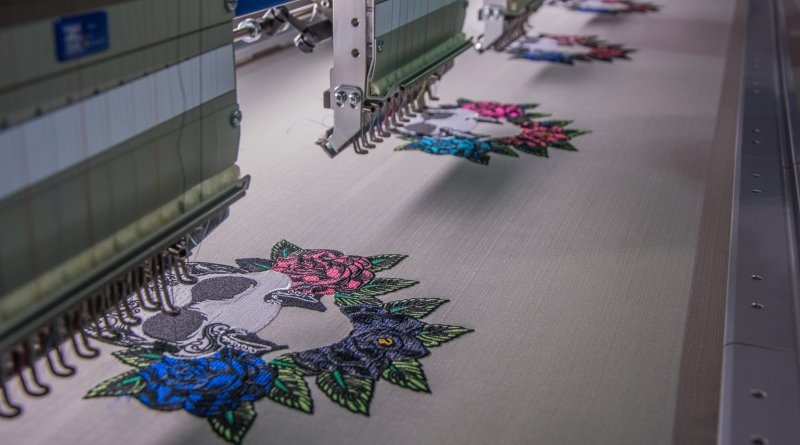

El electro textil es una tecnología que combina textiles con componentes electrónicos o sistemas automatizados, permitiendo que las prendas o productos textiles tengan funciones adicionales, como control, iluminación o automatización. En nuestro caso, se refiere a maquinaria especializada que realiza bordados de alta precisión de forma automatizada. Implementar un concepto de electro textil en un taller nos permite aumentar la eficiencia, reducir tiempos de producción y ofrecer diseños más complejos y precisos. Además, nos ayuda a mantenernos competitivos en el mercado, ampliando nuestra capacidad de producción y mejorando la calidad del producto final. Un medio para conseguirlo requiere máquinas de bordado, computadoras con hardware potente para manejar los programas de diseño y control, y dispositivos de conexión como redes Wi-Fi o cables Ethernet para integrar todo el sistema. Requerimos software de diseño gráfico compatible con máquinas de bordado, además de programas específicos para controlar y programar los dispositivos, que permitan cargar los diseños y gestionar la producción.
La técnica electrotextil permite incorporar circuitos flexibles en telas bordadas, lo que abre nuevas posibilidades en moda, salud y arte. Electro textil: se define así a aquellos tejidos o bien productos que en su naturaleza se encuentra el textil pero que involucra en su composición materiales eléctricos los cuales le adjuntan una funcionalidad adicional, esta función puede ser muy variable pues dependerá de los materiales que se implementen, algunos ejemplos son la luminiscencia, control de temperatura o incluso comodidad. Electro Textil en México: Aunque la industria electro textil en México es relativamente nueva, se ha abierto campo para entrar en materia cada vez más, ha tenido diferentes enfoques como son el competir con diferentes mercados extranjeros, buscar la solución a problemáticas específicas las cuales tienen una vía por la cual se puede abordar este tipo de situaciones, además de contar con un increíble potencial económico, hay distintos sectores los cuales se pueden beneficiar por este tipo de tecnologías, como son el sector deportivo, la medicina, la defensa e incluso la moda.
Marcados en indicadores (KPIs) y métricas de acuerdo con las necesidades o propuesta desarrollada. Verificación de la aplicación de las estrategias digitales sugeridas. Conservar nuestro estilo y diseños artesanales dando a conocer nuevas técnicas y sobre todo la integración de nuevas tecnologías, ya que estás pueden fortalecer a Bord-Arte ofreciendo calidad, limpieza y manifestando nuestra esencia cultural en cada Servilleta bordada. Los resultados esperados apuntan a una relación entre la tradición y la modernidad, donde la tecnología actúe como un facilitador para potenciar nuestra artesanía, mejorar nuestra eficiencia y expandir nuestra creatividad garantizando que cada servilleta bordada siga siendo una pieza de arte única y sensacional. Al implementar estrategias mercadológicas para la producción de servilletas en grandes cantidades, se espera contar el avance de buenos resultados en la operación de este emprendimiento/ negocio, para obtener un aumento considerable en la capacidad de producción y la velocidad de respuesta. La producción en masa, por su propia naturaleza, está diseñada para generar grandes volúmenes de productos en un tiempo reducido. Esto se logra mediante la estandarización de los procesos, la automatización de tareas repetitivas (como el bordado, utilizando máquinas de bordar multi-cabeza de alta velocidad) y una cadena de suministro bien gestionada. Una mayor capacidad de producción no solo permite satisfacer la demanda existente de manera más eficiente, sino que también abre la puerta a la expansión a nuevos mercados o la aceptación de pedidos de mayor volumen, como los de hoteles, restaurantes o eventos especiales. La integración de las nuevas tecnologías aplicadas como el electro textil puede ir más allá de la visión estética dándole un estilo único e innovador. Algunos resultados que se podrían esperar 25 a largo plazo serían obtener funcionalidades tecnológicas o inteligentes, es decir, a pesar de tener un diseño llamativo, estos pueden tener funciones cómo detectar derrames de bebidas o pequeños trozos de comida o incluso añadir sensores que monitoreen la temperatura de los alimentos o bebidas cercanas, indicando el momento óptimo para su consumo. Imagina una servilleta que te indique cuando tu café está a la temperatura perfecta para beber. La aplicación de esta nueva tecnología electro textil en Servilletas bordadas puede lograr varias expectativas e ir más allá de la función tradicional que se mantiene transformándolas en elementos inteligentes, elegantes y funcionales.

Bord Art®
Autor: Venancio López Arellano - Publicado el 28 de julio del 2025